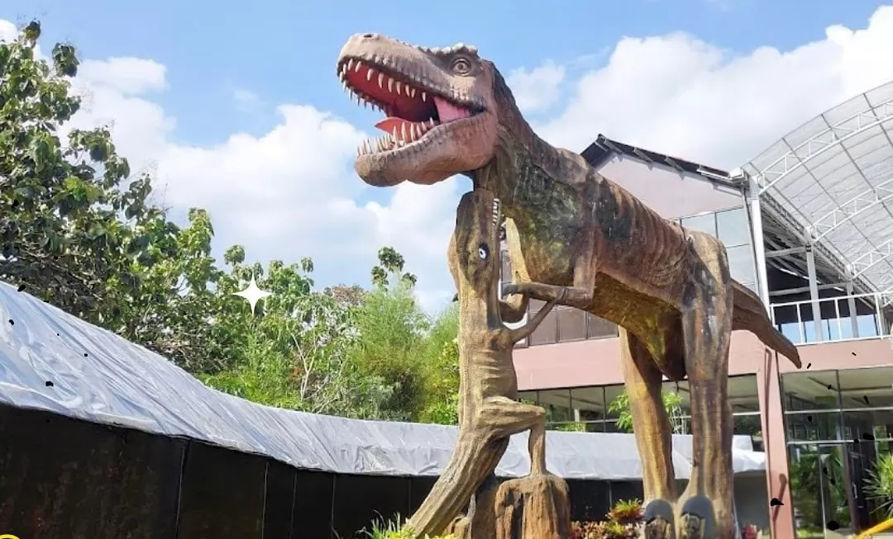
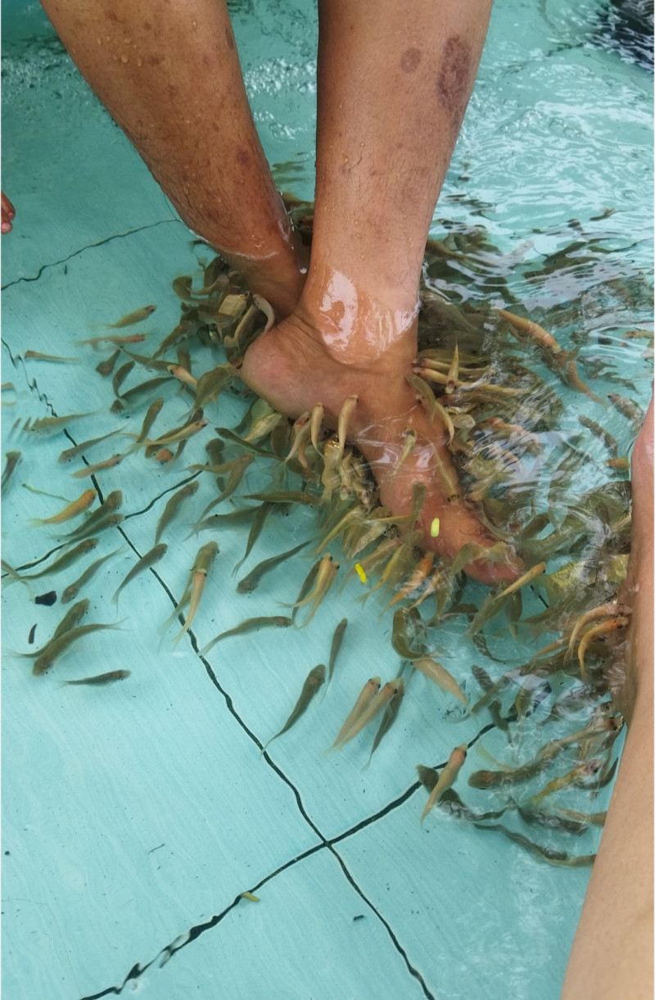
 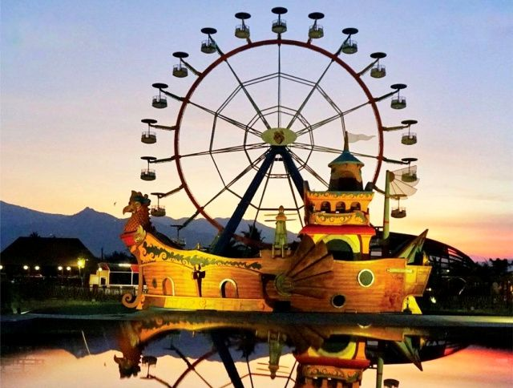
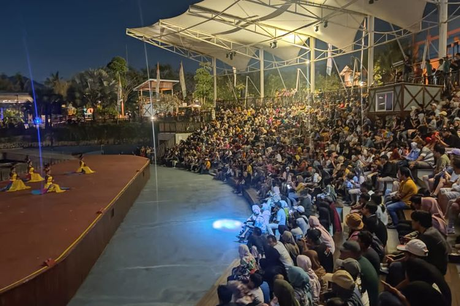
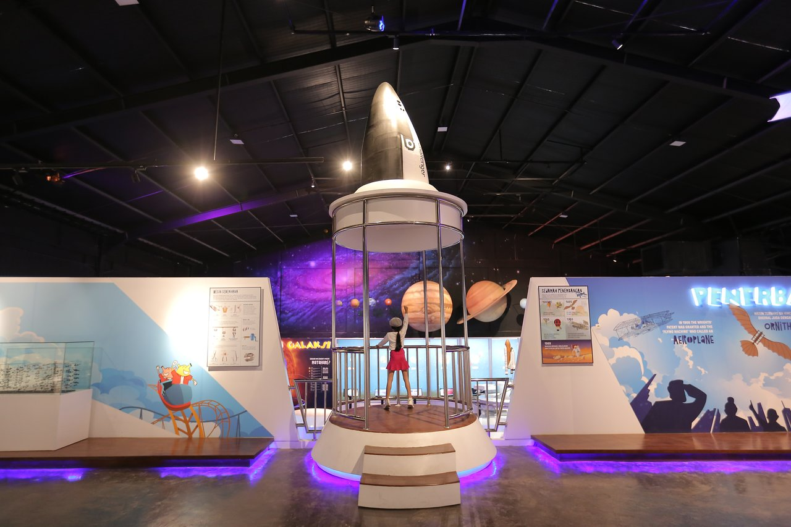
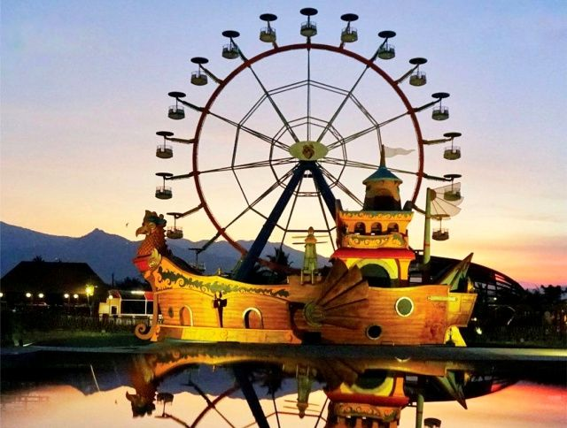
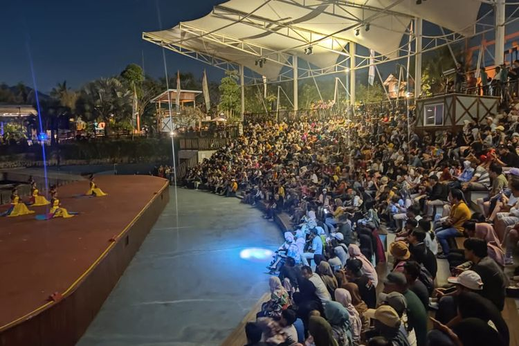
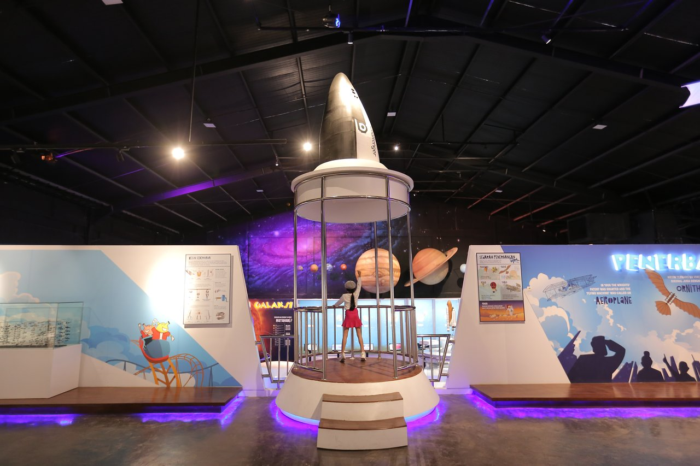
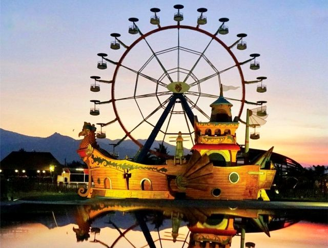
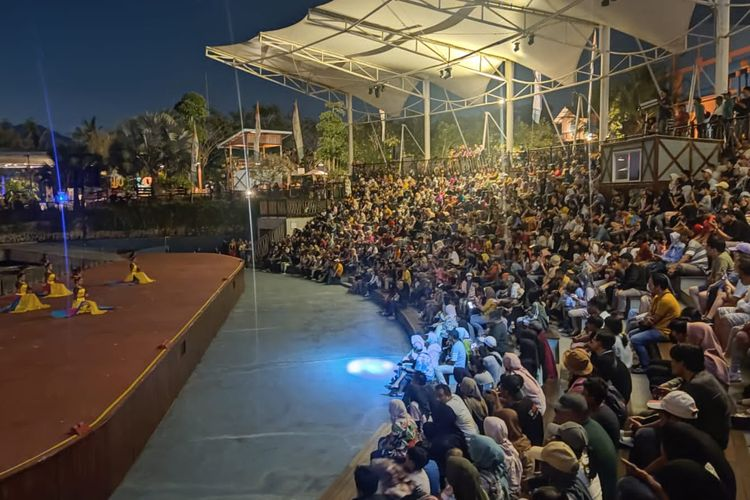
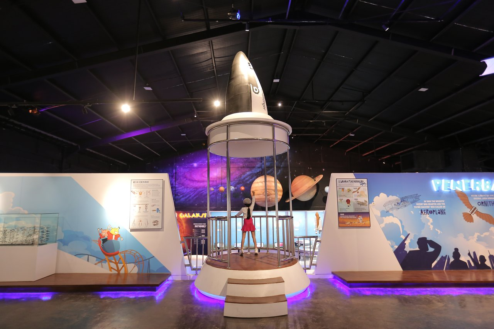
🌄 Pagi: Watu Gajah (06:00 - 12:30)
06:00 - 06:30: Kumpul, briefing, naik bus
06:30 - 09:30: Perjalanan ke Watu Gajah
09:30 - 12:30:
- 🛝 Kolam Keceh & Waterboom (60 menit)
- 🪨 Batu Gajah (10 menit)
- 🌉 Jembatan Kayu & Rumah Pohon (15 menit)
- 👼 Angel Wings (15 menit)
- ⛰️ Puncak Pandang (20 menit)
☀️ Siang: ISOMA & Ke Saloka (12:30 - 14:00)
12:30 - 13:00: Makan siang (lunch box)
13:00 - 14:00: Perjalanan ke Saloka Theme Park
🎢 Sore - Malam: Saloka Full Experience (14:00 - 21:30)
- 14:00 - 15:00: Wahana Cepat - Taman Langit, Dino Park
- 15:00 - 15:30: Sholat Ashar di musala Saloka
- 15:30 - 17:30: Wahana Seru - Rajawali, Banjir Banda, Pasar Setan
- 17:30 - 18:00: Kumpul di theater Baru Klinting
- 18:00 - 18:45: 🎭 Baru Klinting Show
- 18:45 - 19:30: Makan malam + beli merchandise
- 19:30 - 21:30: Perjalanan pulang
🧳 Barang yang Harus Dibawa
- Pakaian olahraga
- Pakaian ganti
- Handuk portable
- Kantong plastik untuk pakaian basah
- Snack ringan
- Minuman cadangan